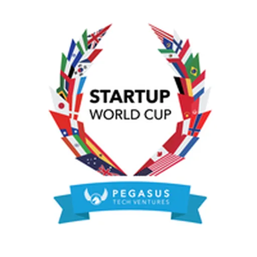

Startup World Cup (Philippines Regional)
Pegasus Tech Ventures — Startup World Cup; the Manila/Philippines regional feeds the global finale
The Startup World Cup (organized by Pegasus Tech Ventures) is a global pitch competition with 70+ regional events feeding a Grand Finale in Silicon Valley. The Philippines (Manila) regional selects a local champion to advance.
- Organization
- Pegasus Tech Ventures — Startup World Cup; the Manila/Philippines regional feeds the global finale
- Coverage
- National
- Funding / award
- Grand finale prize: USD 1,000,000 investment; regional winners advance
- Funding stage
- Pre-seed, Prize / non-dilutive, Seed, Series A
- Sector focus
- Sector-agnostic
Qualifications & eligibility
- Startups across stages (early to growth); sector-agnostic. Open to student- and professional-led ventures.
Funding / award
Grand Finale prize: USD 1,000,000 in investment. Regional winners advance; regional events may carry their own perks.
Key dates & deadline
Annual. The 2025 Philippines regional was held Oct 15, 2025.
📅 Forecasted application window: Expect a 2026 Philippines regional on a similar ~Q3/Q4 timeline feeding the global finale.
How to apply
Apply via the Philippines regional page when applications open.
Apply / contact
Sources & references
Details are drawn from public records and the sources above, July 2026.
Startupreneur Innovation Hub · synced from the Notion catalog (July 2026) · status: published.